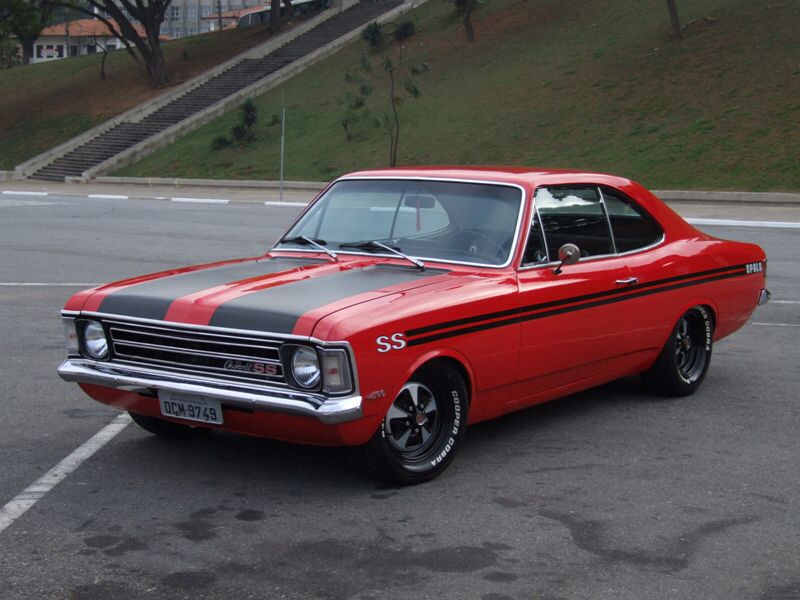

O Chevrolet Opala foi um dos carros mais marcantes da indústria automobilística brasileira. Lançado em 1968, ele conquistou os motoristas pelo conforto, desempenho e visual elegante. Durante muitos anos, foi utilizado tanto por famílias quanto por empresas e órgãos públicos. Atualmente, o Opala é considerado um clássico nacional e é muito admirado por colecionadores. Seu design marcante e sua importância na história dos automóveis brasileiros fazem dele um dos carros mais lembrados até hoje.
Voltar para a Página Inicial